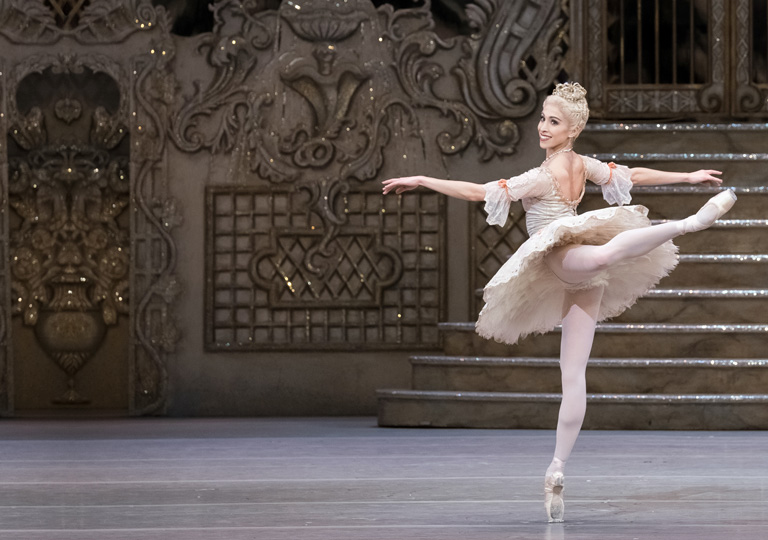
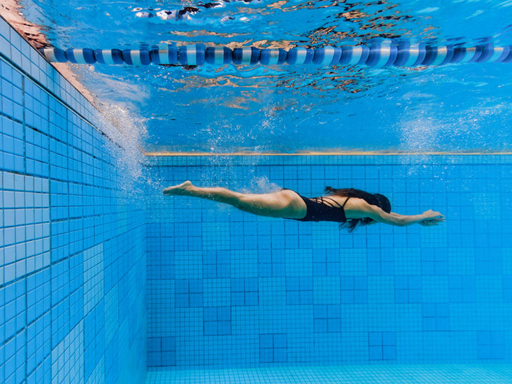
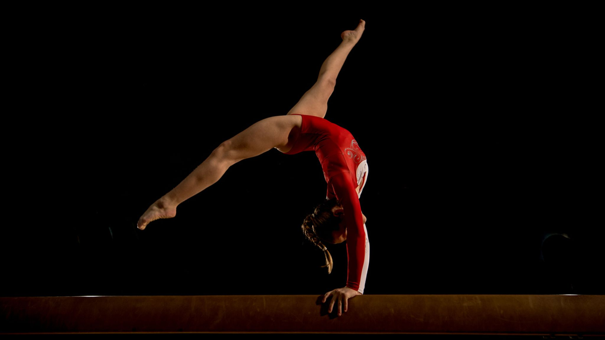

- BALLET 
- SWIMMING *NOT ME! HAHA*
- GYMNASTICS  *STILL NOT ME HEHE!*
- TAEKWONDO
I started practicing it at the age of 4, and I loved the idea of becoming a professional ballet dancer one day. I got so many skills from practicing this art, and enjoyed it very much. I did not continued practicing it because as I grew up I started becoming lazy, and my mom did not take me anymore because of my behavior. I did not want to continue it anyways, but while I was at it many beautiful things happened. Here's the show I've always liked:
There's not much to say about this sport, because I only practiced it probably for 6 months. I never liked it, but my mom's dream was to become a swimmer. She loves loves to swim, so I wanted to make her feel happy. Besides, I needed to learn how to swim somehow anyways!
Gymnastics was another big dream of mine. Since I had a very neat history in ballet, Gymnastics was actually pretty easy for me to start. I am a very flexible person, and that helped me so much. However... I had no strength at all. So in that part it was the hardest for me. Also, I was afraid of getting hurt because there are so many dangerous things in this sport! And well! I did end up straining my ankle pretty badly. This wasn't why I stopped practicing it though. I was getting so many headaches from the routines I had to make, so I couldn't handle it anymore. I practiced this sport for over a year, and was pretty great besides everyhing else.
 *NOW THIS IS ME!*
*NOW THIS IS ME!*
Finally, I practiced Taekwondo. This sport is my sport. Is the one I love and the one I completed. I am a black belt now, and the journey to get it was simply amazing. I am extremely grateful to have completed such wonderful sport. Now that I'm here studying in Canada, I can't practice it anymore. Thankfully, every lesson has been learned, and I am able to train on my own. In this sport I met so many good people, and so as I always say, getting into this sport is not only a way to get strong and have good health, but is also a way of living. This is the sport that my dad wanted to complete as well, and he did it too! My brother also practices it, so it was nice to have my family around while training. Here's some of the things we do as taekwondo students:
Here's also a picture of me and my brother and father at our exam ceremony. Here's where we received our black belts.

It's been a great journey after all!